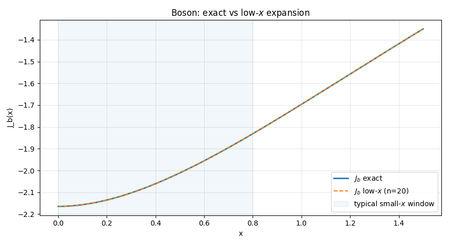
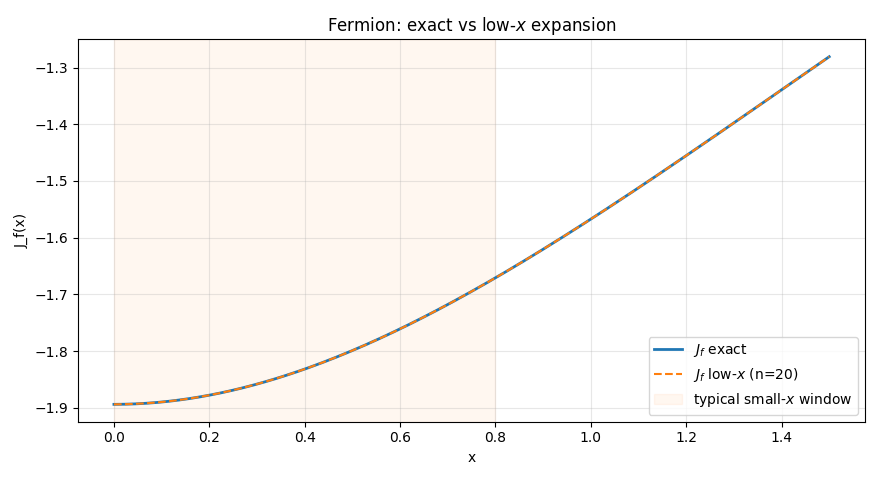
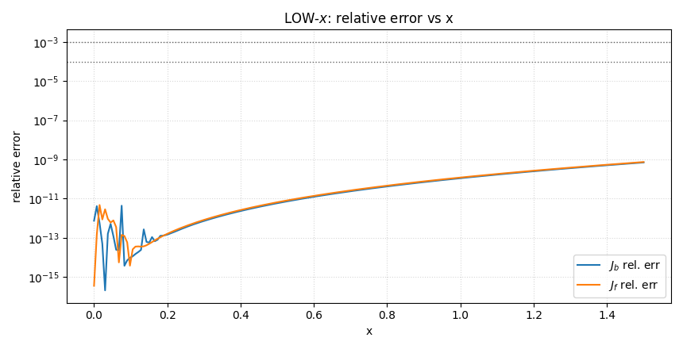
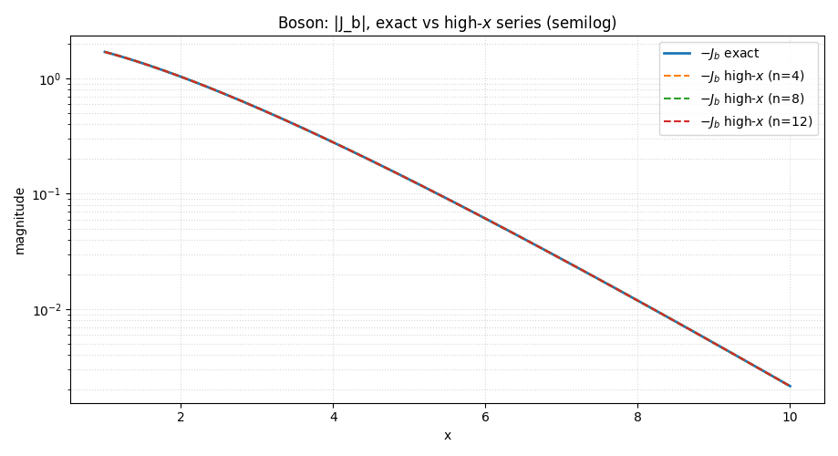
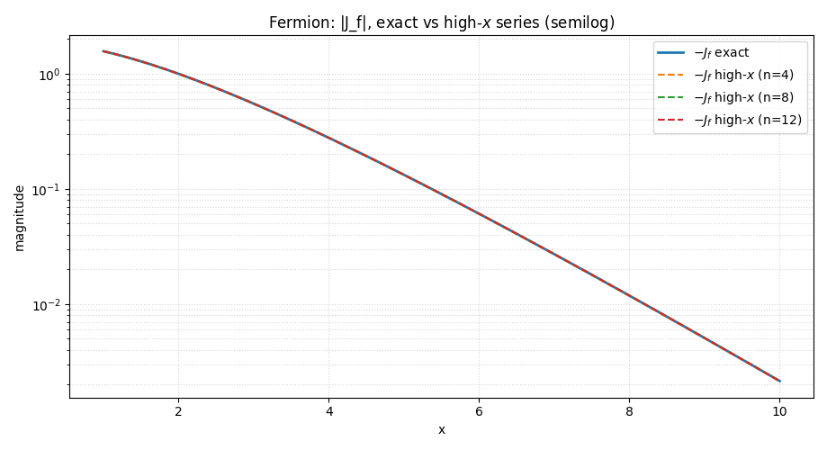
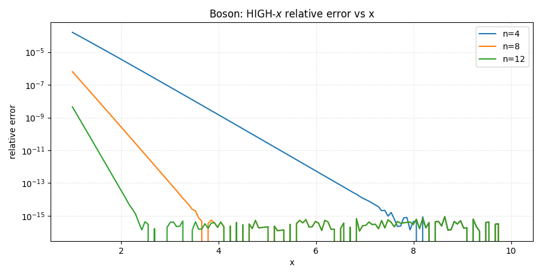
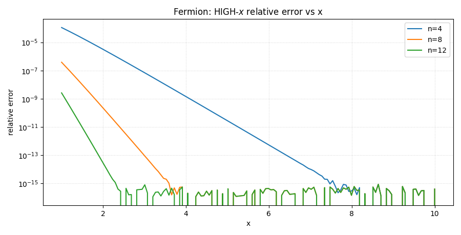

Approx Thermal Integrals (Jb, Jf)¶
Low-x (High-T) Approximate Thermal Integrals¶
This page documents the small (x) (high temperature) asymptotic expansions for the 1 loop thermal integrals:
with (x = m/T). The functions below implement the low (x) series used ubiquitously in finite temperature QFT.
Purpose (for both): provide fast, vectorized approximations valid for (\(|x|\ll 1\)). They return types (scalar-in → scalar-out; array-in → array-out), using modern numerics and clear error handling.
Signatures¶
Jb_low(x: float | array_like, n: int = 20) -> float | np.ndarray
Jf_low(x: float | array_like, n: int = 20) -> float | np.ndarray
Formulas¶
For small (|x|), the bosonic and fermionic integrals admit the asymptotic series
where
and (\(\gamma_E\)) is the Euler Mascheroni constant. The tail coefficients (\(g^{(b)}_i, g^{(f)}_i\)) are precomputed from combinations of the Riemann zeta and Gamma functions (as in the literature), and we truncate the tail at order (n) (default (n=20), capped at 50).
Implementation notes
- The (\(x^4\ln x^2\)) piece has a removable singularity at (x=0). We evaluate it as exactly zero at (\(x=0\)) to avoid \((0\times(-\infty))\) numerics.
- The tail (\(\sum_{i=1}^{n}g_i x^{2i+4}\)) is accumulated as (\(x^4 \sum_i g_i (x^2)^i\)) for stability and performance.
Parameters, Returns & Errors¶
Parameters (both)
x(float | array_like): argument (x=m/T). Intended for the small (x) regime.n(int, default20): number of tail terms to add. Clipped to the available (50) precomputed terms.
Returns (both)
float | np.ndarray: \((J_{b,f}(x))\) with the chosen truncation; preserves scalar/array shape.
Raises (both)
ValueErrorifn < 0.TypeErrorifxis complex. (Low (x) expansions are defined for real (x). For complex/imaginary mass, use the exact or spline implementations.)
When to use¶
- Use
Jb_low/Jf_lowfor fast high-T evaluations with (\(|x|\ll 1\)) when you don’t need the full integral and want smooth dependence near the origin. - Prefer the exact or spline versions outside the small (x) window or when high accuracy is required globally.
Caveats (asymptotic series):
- Adding more terms (
n) usually improves accuracy for sufficiently small (x), but for fixed (x) the series is asymptotic—there is an optimal truncation beyond which errors grow. - Not suitable for complex (x) (no physical meaning for mixed real+imag parts here; use exact/spline branches instead).
Usage hints¶
# Small-x grid (e.g., up to x ~ 0.5)
x = np.linspace(0.0, 0.5, 200)
# Fast approximations
Jb_approx = Jb_low(x, n=20)
Jf_approx = Jf_low(x, n=20)
# Cross-check near the origin (optional)
Jb0 = Jb_low(0.0) # ≈ -π^4/45
Jf0 = Jf_low(0.0) # ≈ -7π^4/360
For full validation plots and quantitative error checks against the exact integrals, see the test suite for this sub-module.
Test - Low-x (High-T)¶
Comparison: exact vs. low-x series
Setup: (\(x \in [0,,1.5]\)). We intentionally go beyond the strictly small-(x) window to show where the series starts to degrade. Truncation length (n=20) (can be tuned).
Note: If you change the grid one can see that for \(x \geq 3\), \(J_f\) diverges quickly. The same thing happens for \(x \geq 5.5\) in \(J_b\).
Plots¶
-
Boson: exact vs. low-x approximation 
-
Fermion: exact vs. low-x approximation 
-
Relative error (both species on one panel; log scale) 
Expected behavior¶
- Near (\(x\approx 0\)), the low (x) series is excellent for both (\(J_b\)) and (\(J_f\)).
- Accuracy gradually decreases as (x) grows; with \((n\approx 20)\), the series is typically more reliable up to (\(x\sim 1.5{-}2\)).
Console output¶
=== Test 1: LOW-x (high-T) comparison: exact vs low-x series ===
Boson (low-x) n=20: max abs err=9.492e-10, max rel err=7.029e-10
Fermion(low-x) n=20: max abs err=9.492e-10, max rel err=7.411e-10
threshold 1e-03: max x with rel err < thr → J_b: 1.500, J_f: 1.500
threshold 1e-04: max x with rel err < thr → J_b: 1.500, J_f: 1.500
Expectation: The low-x series is excellent near x≈0 and degrades gradually;
truncation at n≈20 is typically sufficient up to x~1.5–2.
- see tests/finiteT/Approx_Thermal_Integrals for more
High-x (Low-T) Approximate Thermal Integrals¶
This page documents the large (x) (low temperature) asymptotic expansions of the 1 loop thermal integrals,
with (x=m/T). For (\(x\gg 1\)), both integrals admit rapidly convergent series in terms of the modified Bessel functions (\(K_\nu\)).
Purpose (for all functions in this block): provide fast, vectorized, and numerically stable high (x) approximations (and up to 3 derivatives) using sums of (\(K_\nu\)).
Signatures¶
# Term (single-k) building blocks
x2K2(k: int, x: float | array_like) -> float | np.ndarray
dx2K2(k: int, x: float | array_like) -> float | np.ndarray
d2x2K2(k: int, x: float | array_like)-> float | np.ndarray
d3x2K2(k: int, x: float | array_like)-> float | np.ndarray
# High-x sums (public)
Jb_high(x: float | array_like, deriv: int = 0, n: int = 8) -> float | np.ndarray
Jf_high(x: float | array_like, deriv: int = 0, n: int = 8) -> float | np.ndarray
Formulation¶
The expansions are built from the “single (k)” terms
whose derivatives w.r.t. (x) (accounting for the even/odd symmetry through (|x|)) are:
- 0th: \((T_k(x)= -\dfrac{x^2}{k^2}K_2\big(k|x|\big))\).
- 1st: \((\dfrac{dT_k}{dx} = \dfrac{x|x|}{k}K_1\big(k|x|\big))\) (odd, vanishes at (x=0)).
- 2nd: \((\dfrac{d^2T_k}{dx^2} = |x|\left(\dfrac{K_1(k|x|)}{k}-|x|K_0(k|x|)\right))\) (even).
- 3rd: \((\dfrac{d^3T_k}{dx^3} = x\left(|x|k K_1(k|x|)-3K_0(k|x|)\right))\) (odd).
Then:
The alternating sign for (\(J_f\)) reflects Fermi–Dirac statistics. Each term decays (\(\sim e^{-k|x|}\)), so only a few terms are needed for (\(x\gtrsim\mathcal{O}(1)\)).
Small-(x) limits for single-(k) terms¶
Used to avoid numerical issues and ensure smoothness at (x=0):
Parameters, Returns & Errors¶
Parameters (all):
x(float | array_like, real): argument (x=m/T). These high-(x) series target real (x).deriv(int, default0forJ*_high): order of derivative to return (0,1,2,3).n(int, default8forJ*_high): number of exponential terms in the truncated sum; must be ≥ 1.
Returns (all):
float | np.ndarray: the requested approximation, preserving scalar/array shape.
Raises (all):
TypeErrorifxis complex (no physical meaning for mixed real+imag here; use exact/spline branches for complex analyses).ValueErrorifderiv ∉ {0,1,2,3}or ifn < 1.ValueErrorif a term helper is called withk ≤ 0(internal guard).
When to use¶
- Use
Jb_high/Jf_high(and derivatives) when (x) is moderately to very large (e.g. (\(x \gtrsim 2\))), where the series converges exponentially fast. -
For small or intermediate (x), prefer:
-
Jb_low/Jf_low(low (x) series, high T), Jb_exact/Jf_exact(direct quadrature),- or
Jb_spline/Jf_spline(global interpolation). - Complex (x) has no direct physical interpretation here and is not supported by the high (x) series.
Usage hints¶
# Example: values (no derivatives), n=8 terms
x = np.linspace(2.0, 8.0, 60)
Jb = Jb_high(x, deriv=0, n=8)
Jf = Jf_high(x, deriv=0, n=8)
# First derivatives
dJb = Jb_high(x, deriv=1, n=8)
dJf = Jf_high(x, deriv=1, n=8)
# Scalar input → scalar output
val_b = Jb_high(5.0) # float
val_f = Jf_high(5.0, 2, 10) # d²/dx² with 10 terms
Convergence tip: increase n until your observable stops changing at the precision you need. Because terms scale as (\(e^{-k|x|}\)), a modest n (6–12) is usually enough for (\(x \gtrsim 2\)).
Numerical/Implementation Notes¶
- We evaluate Bessel functions with SciPy (
scipy.special.kv), always using (k|x|) in the argument to maintain the correct even/odd symmetry of derivatives. - At
x == 0, we insert the analytic limits listed above to avoid underflow/overflow and ensure smoothness. - Functions are fully vectorized (array-in → array-out) while preserving scalar behavior (scalar-in → scalar-out), consistent with the legacy API.
High-x (Low-T) - Test¶
comparison: exact vs. high x series
Setup: (\(x \in [2,,10]\)). We compare the exact integrals against the high (x) sums with (\(n\in{4,8,12}\)) terms to illustrate exponential convergence.
Plots¶
-
Boson: (\(|J_b|\)) semilog — exact vs. high-(x) (n=4,8,12) 
-
Fermion: (\(|J_f|\)) semilog — exact vs. high-(x) (n=4,8,12) 
-
Boson: relative error vs. (x) (n=4,8,12) 
-
Fermion: relative error vs. (x) (n=4,8,12) 
Expected behavior¶
- Both (\(|J_b|\)) and (\(|J_f|\)) decay roughly (\(\sim e^{-x}\)); the high-(x) sums track the exact curves closely on semilog axes.
- Relative error drops rapidly with increasing (n) and (x); \((n\approx 8{-}12)\) is usually very accurate for (\(x\gtrsim 2\)).
Console output¶
=== Test 2: HIGH-x (low-T) comparison: exact vs high-x series ===
High-x error summary (boson):
n= 4: max rel err=1.619e-04, median rel err=3.945e-12
n= 8: max rel err=6.351e-07, median rel err=3.778e-16
n=12: max rel err=4.527e-09, median rel err=2.949e-16
High-x error summary (fermion):
n= 4: max rel err=1.113e-04, median rel err=3.929e-12
n= 8: max rel err=3.878e-07, median rel err=3.485e-16
n=12: max rel err=2.618e-09, median rel err=2.686e-16
Expectation: High-x sums converge exponentially fast with n and x;
even n≈8–12 is typically very accurate for x≳2.
---------- END OF TESTS: Approx Thermal Integrals ----------
- see tests/finiteT/Approx_Thermal_Integrals for more